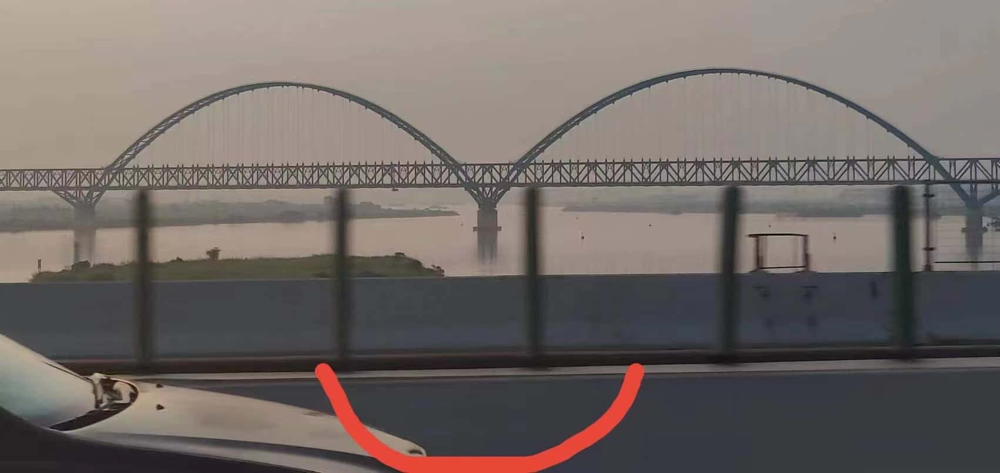
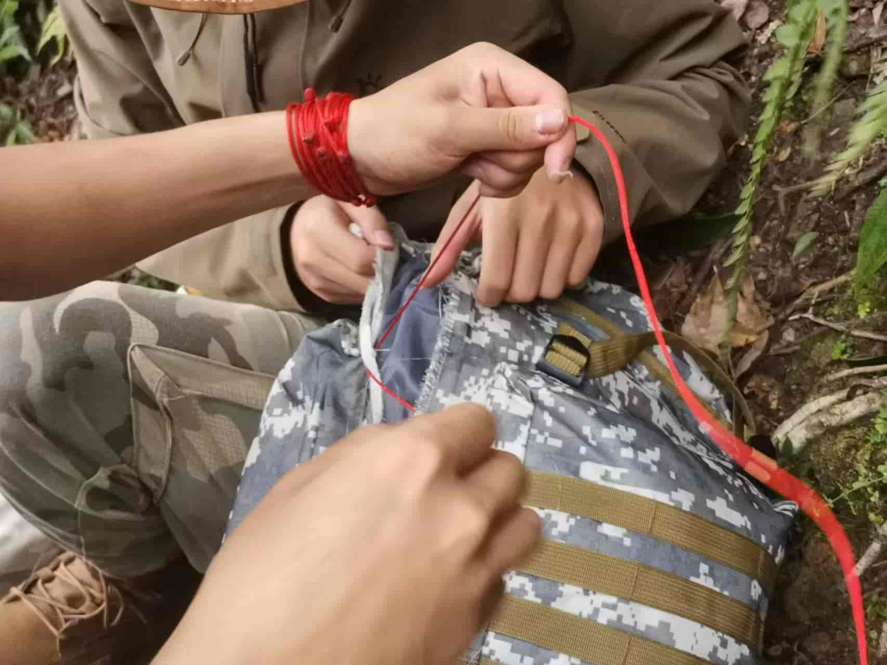
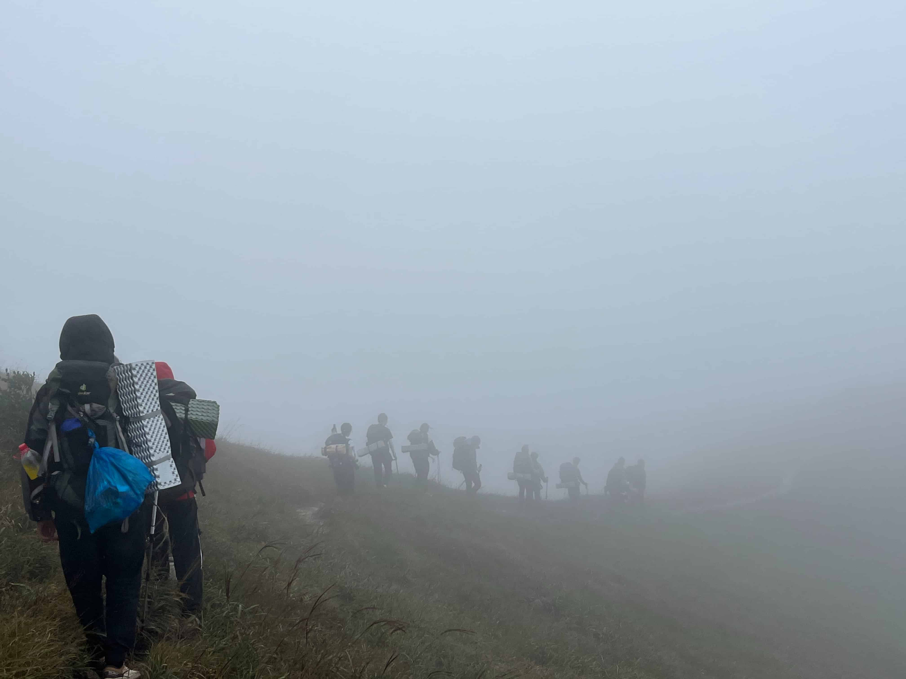
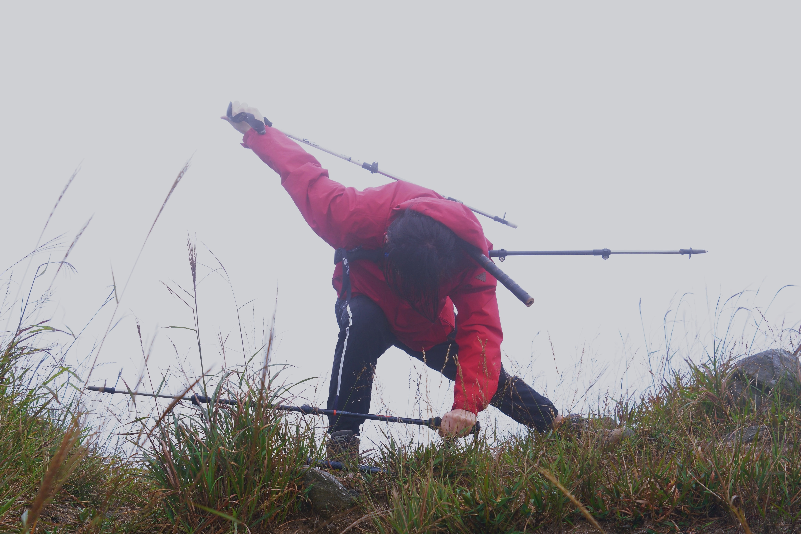
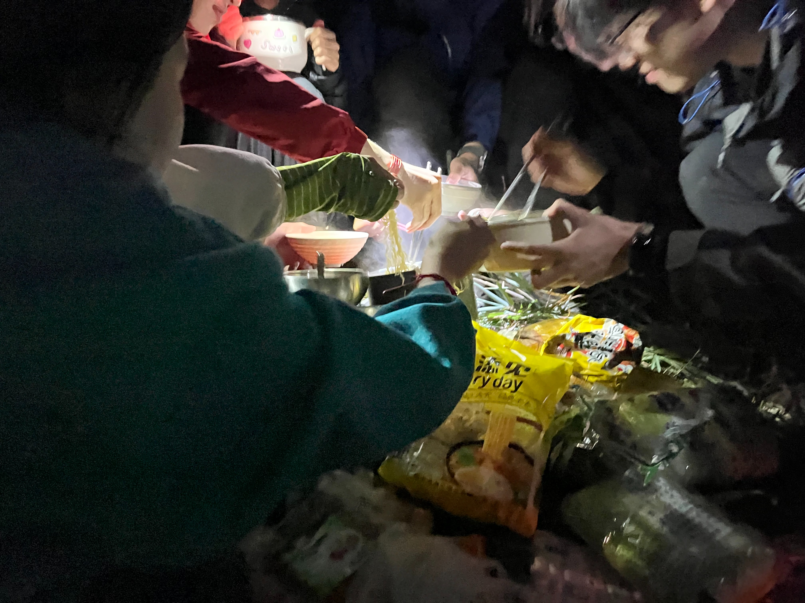
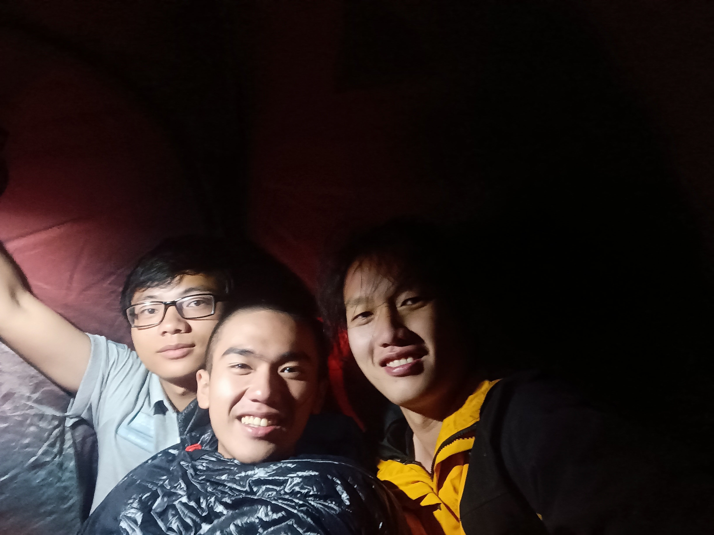
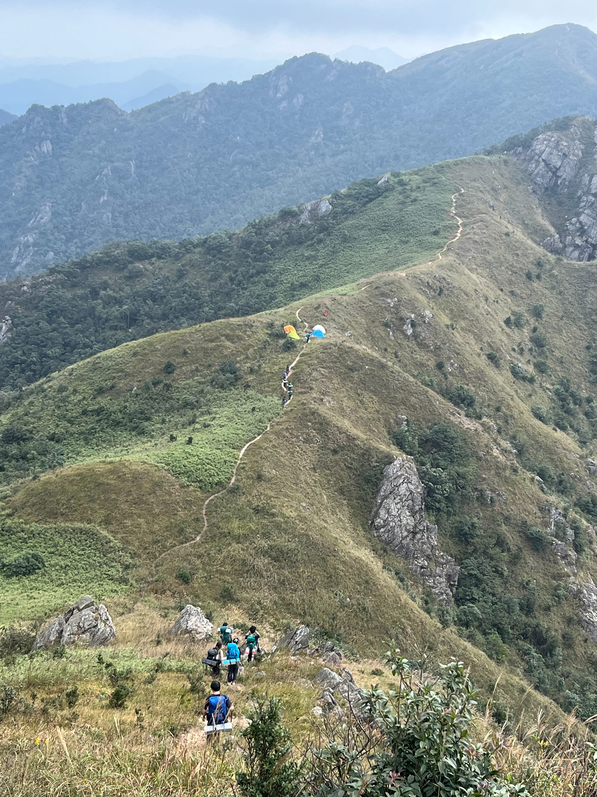
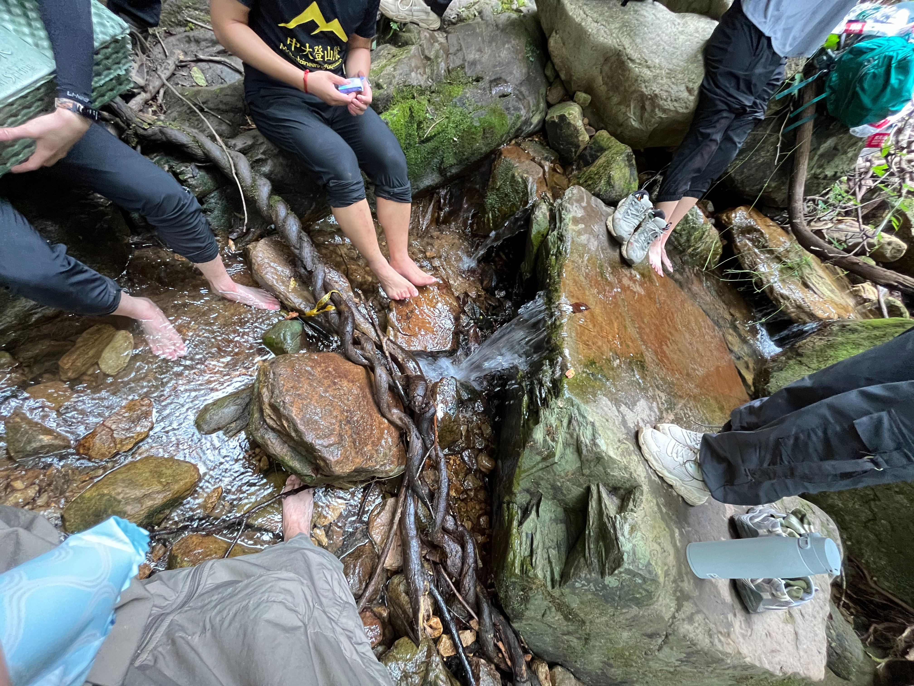

2023年10月黄牛石线（河源）
书接上回，以为上次是大四最后一次出线了，想不到造化弄人，少了些机遇，多了些稳定。
10.4
没想到这一次四点半到发车点到时候，大伙已经整装待发（最准时的一集，希望以后好好发扬），就差我了一上车看到一堆生面孔，想掉头就走。
接下来就是漫长的坐车time，偶遇smile大桥:

十点多到达绿野山庄，熟悉的山庄，上次来的时候还是和黄妈一起挤他最爱的1.5人帐。借用山庄的亭子绑红绳。两个队长都是第一次绑，村花无师自通掌握绑红绳技术，熟练度50\%；香菜从10\%熟练度开始练习，在众多队员的牺牲下，在香菜颤抖的努力下，熟练度直追60\%，绑的还挺好看的，嘿嘿。
10.5
一大早吃完早餐后出发，我、麻瓜和饭桶跟着香菜冲在前面，不一会饭桶就不见身影了。走独木桥1是最惊险的一集，走得越慢越害怕，只能强迫自己走得快一点，迈大步子，实际上这样也更容易维持平衡。（有端联想到某恐怖游戏R6，要勇敢拉枪突突突）
刚过一个独木桥没多远，就听到后队传来一身“啊！”，紧接着就是几声惊呼。嗯，果然有人掉下桥了，如果是新火鸡的话就有些麻烦了，好在掉下去的只是红娘ლ(´ڡ`ლ)，最不担心的一集2。据说红娘偏要踩最边缘那一根小木头，结果那根木头断了，现场视频指路。
在某次下包休息的时候，被村花喊到后队去摸鱼，太好了难过了。后队人员组成有甲鱼、饭桶和村花。甲鱼手持相机所以走得比较慢，饭桶生怕把小命丢在这里，一步三顾左右，所以走得也比较慢，所以后队走得很舒服，可以看做是和村花的二人世界(✿◡‿◡)。
路上铁锅的包裂开了，totally裂开那种:

不问不知道，一问吓一跳，这包50大洋┌(。Д。)┐。红娘掏出红绳开始缝包，缝缝补补十几分钟后又是一个好包，还好他包里没什么重物，不然红绳肯定兜不住，东西只能往我们的包里招呼3。
路上小火鸡在问什么时候登顶，哼哼，终于可以掏出珍藏已久的“最后一公里”来回答他们4。
登顶后没有前年的风景，全是风和雾，这波是雾天人主场(?)

十米外就看不清那个人是谁了，前年下山的时候有一会大雾，之后就没了。所以这次的体验也挺新奇的。
放一张路上的三刀流(红娘又在我脖子后插了个….笛子？):

大概下午四点左右到营地，全是草，还没啥平地QAQ。跟红娘香菜村花去找去年的营地，找倒是找到了，但那是山脊的位置，风速max，只得作罢。最艰辛的一次营地5，地不平，风大，炉头坏了一个，吹二十分钟的冷风吃上一个热乎的丸子，苦鲁西(ಥ﹏ಥ)。

香菜他们的帐杆还坏了，打算四个人挤双人帐，但是怎么说呢，三个人躺进去后觉得这个小屋已经很温馨了，刚刚好，容不得第四个人插足！但是村花非要挤进来，集中营都没这么挤，虽然红娘诚邀我们一个人过去他帐篷睡觉，但是大伙都害怕晚上被他吃了，或者晚上起来看见冰红茶，纷纷摇头。最后还是伟大的香菜舍身前往红娘帐篷，留下珍贵的生前合影:

十点左右我就睡着了，半夜被对讲机吵醒：“请更换电池
在村花的改邪归正下，他睡回了他应该睡的地方，我得以松一口气，渐入梦乡。
10.06
跳去一些有味道的回忆，我们出发下山，甲鱼把相机收进了包里，饭桶忽然获得了勇气，所以今天后队走得快很多，大伙下山速度杠杠快。

路上遇到一处小溪，路过一个我抓一个，统统来给我享受泡脚！直接开始泡jiojio：

山泉水泡完jio后直追前队，直接出山，几小时的车程后进行一个饭的干。
啊对了，忘记介绍了，本次的新外号有：铁锅、甲鱼、饭桶、蚯蚓、蚂蚱以及炒肉6。新火鸡都好有活力，社团以后就指望你们了(大哭大哭)。
好潦草的结尾7。
1. 实际上不只一根木头，有三四根，但是走上去桥会弯 ↩
2. 虽说如此，但是红娘的手肘还是受伤了，有些动作无法做出 ↩
3. 吓我一跳释放忍术！ ↩
4. 当年就是这样被忽悠的 ↩
5. 我知道这是一句病句 ↩
6. 所以说是最有食欲的一集 ↩
7. 摸鱼佬的事你少管！ ↩